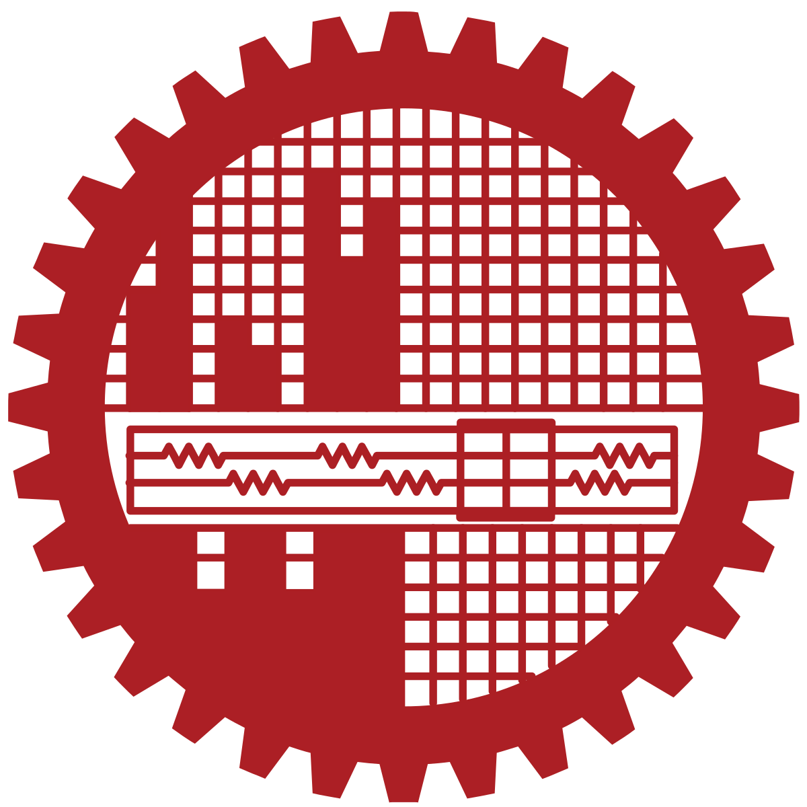
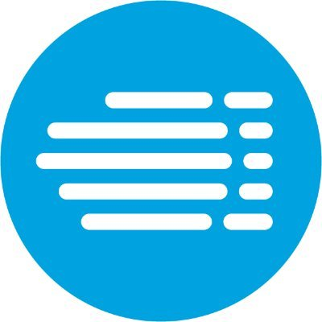

University of Texas at Arlington
PhD in Computer Science and Engineering
CGPA: 4.00 / 4.00
Full-time PhD Student & Graduate Research Assistant
Supervisor: Dr. Mohammad Atiqul Islam
I am a Computer Science PhD student and Graduate Research Assistant at The University of Texas at Arlington, advised by Dr. Mohammad Atiqul Islam. I work at the intersection of Agentic AI, NLP, large language models, trustworthy AI, and efficient LLM systems. Before my PhD, I spent more than three years as a Machine Learning Engineer at IQVIA, building production ML and LLM systems. My work spans top-tier research, including a first-author NeurIPS 2026 Evaluations & Datasets poster, an ICML Spotlight, and a first-author EACL Findings paper, as well as deployed AI systems whose insights contributed to a 15% increase in market sales.
Our paper, “DeEscalWild: A Real-World Benchmark for Automated De-Escalation Training with SLMs,” introduces a large-scale benchmark built from real-world police-civilian interactions. Starting from approximately 5,000 public videos, our human-AI curation pipeline produced 1,500 high-quality scenarios with 285,887 dialogue turns and approximately 4.7 million tokens.
Computer science training spanning research, systems, machine learning, and large language models.
CGPA: 4.00 / 4.00
Full-time PhD Student & Graduate Research Assistant
Supervisor: Dr. Mohammad Atiqul Islam

Jul 2022 - Aug 2025CGPA: 3.75 / 4.00
Thesis: An Efficient Compositional Reasoning Approach for Solving Geospatial Queries Using LLMs
CGPA: 3.77 / 4.00 · 3.89 senior year · Rank 31/127
Thesis: A Multi-Modal Deep Learning Based Approach for House Price Prediction
Peer-reviewed work in LLM reasoning/evaluation and trustworthy machine learning, together with ongoing research in efficient LLM inference.
Building and deploying machine learning and LLM systems in production environments.

Undergraduate instruction, project supervision, and student mentoring in computer science.
Taught undergraduate laboratory/session courses, supervised student projects, mentored students, and supported assessment and course delivery.
Industry recognition, competitive research support, and academic achievement.
Recognition in the highest Impact Program category for exceptional contribution and impact.
2024Recognition for strong contribution, performance, and impact within IQVIA's internal program.
2025Competitive $1,500 grant from the Directorate of Advisory, Extension and Research Services for the MapAgent research project.
2024Awarded for academic performance across two semesters.
2 SemestersNamed to the Dean's List for three consecutive academic years, Levels 2 through 4.
3 YearsResearch and engineering tools used across LLM, machine learning, and production systems work.
Agentic AI, NLP, Large Language Models, LLM evaluation, trustworthy AI, RAG, reasoning, efficient inference.
PyTorch, TensorFlow, Hugging Face, LangChain, scikit-learn, production LLM and RAG systems.
Python, C/C++, Java, JavaScript, SQL, LaTeX.
AWS SageMaker, EC2, ECR, Bedrock, Docker, Kubernetes, Git.
PostgreSQL, MySQL, MongoDB, Snowflake.
Selected peer-reviewed research presented at international conferences in natural language processing and trustworthy machine learning.